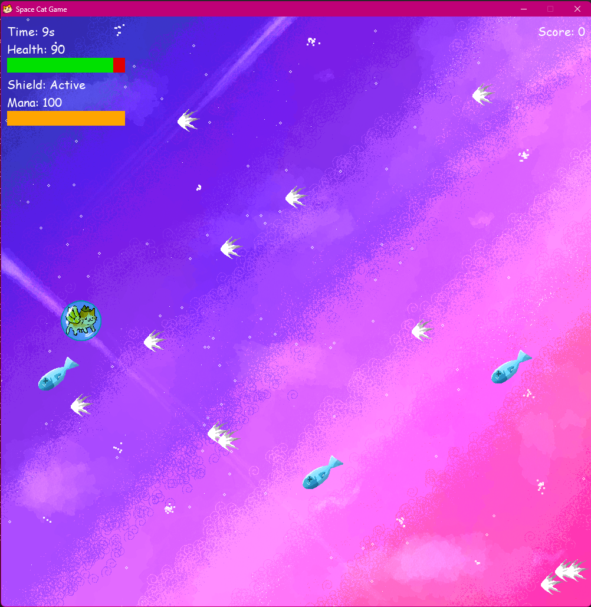
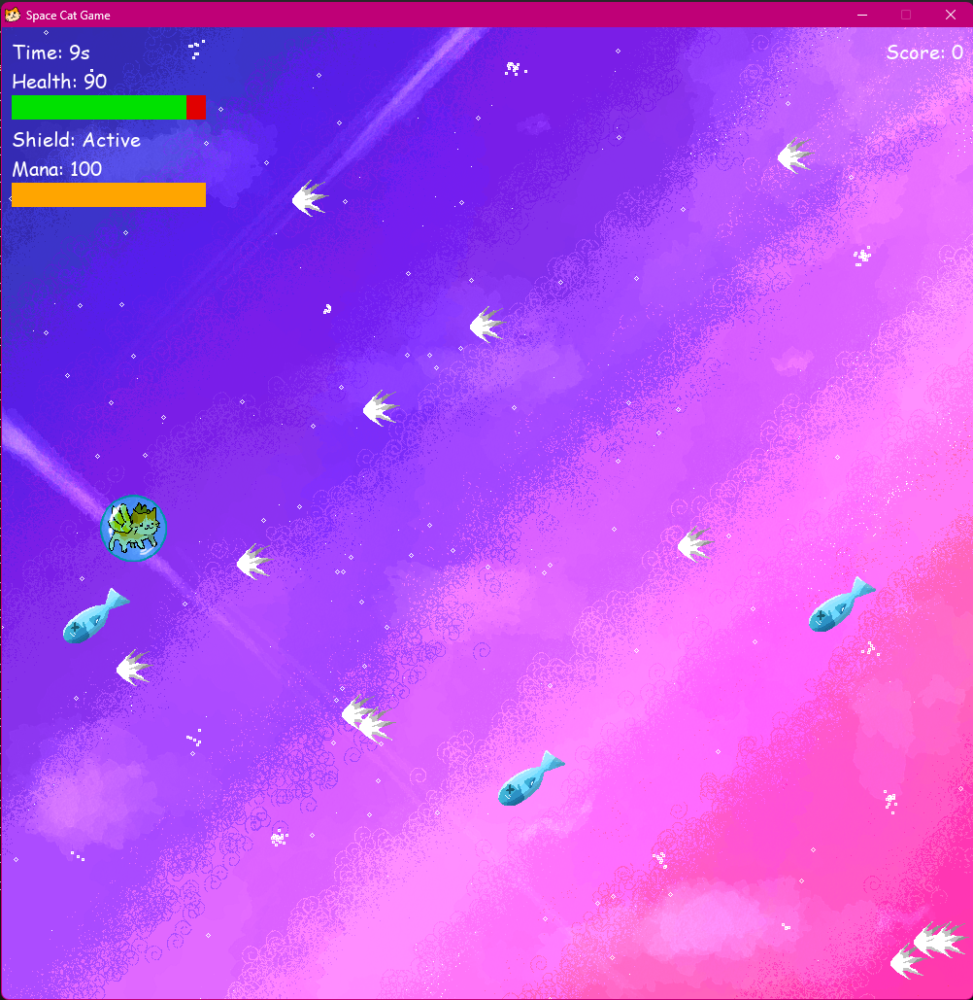
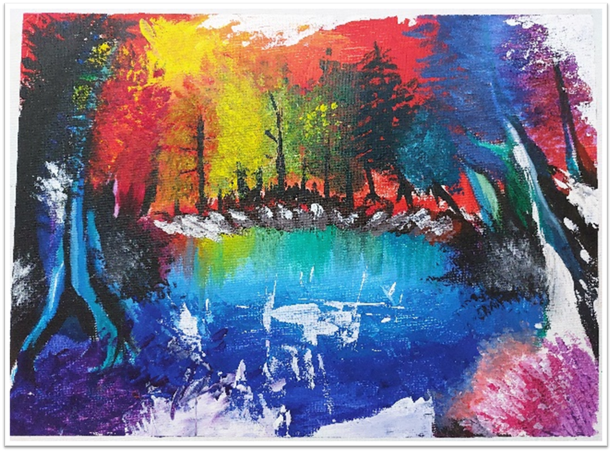
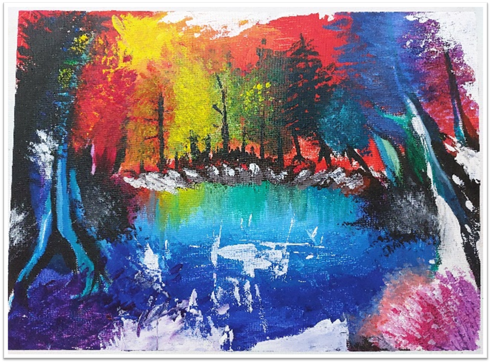

Space Cat Shooter Game
In the Space Cat Game, you control a space-traveling cat navigating through an endless space filled with obstacles and collectibles. The primary objective is to survive as long as possible while increasing your score by collecting items and avoiding hazards.
The game features a simple yet engaging gameplay loop, where players can earn points by collecting items and avoiding obstacles. The game is designed to be easy to pick up and play, making it suitable for players of all ages.
The game is built using Python and Visual Studio Code, showcasing my skills in game development and programming. The artwork was made by me using Clip Studio Paint.
The game is inspired by my cat Johan, who is a playful and curious feline. The game captures his adventurous spirit as he explores the vastness of space, destroying objects and meowing playfully.
You can play the game by clicking the link below:
View on GitHub
 



 
